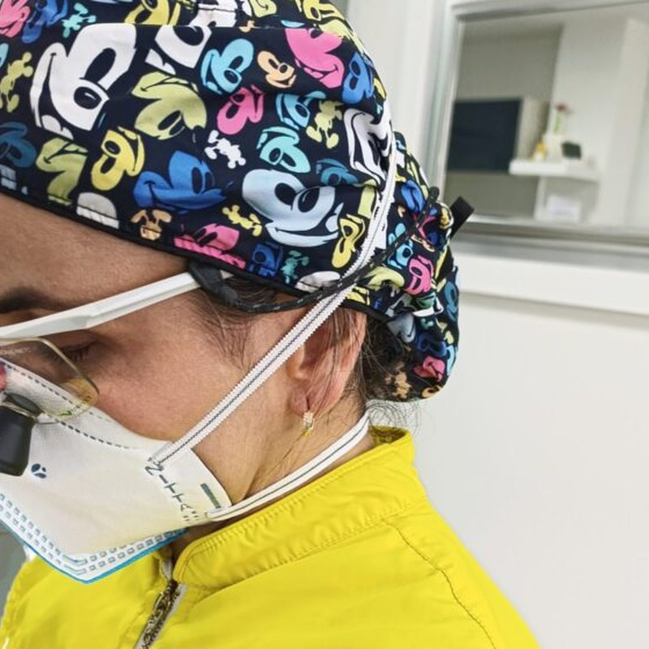
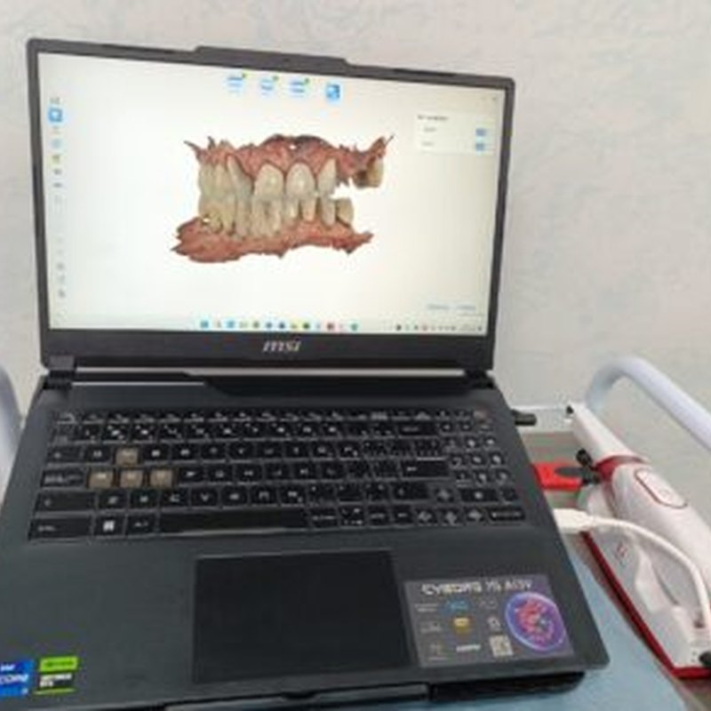

Tecnología
EQUIPAMIENTO DE ÚLTIMA GENERACIÓN

Magnificación
Precisión máxima en cada procedimiento gracias a sistemas de magnificación que permiten ver detalles imposibles a simple vista.

Escáner 3D
Diagnóstico preciso y planificación exacta de su tratamiento. Sin impresiones tradicionales incómodas.

Materiales Premium
Porcelana, zirconio y composite de última generación. Certificados y biocompatibles para durabilidad superior.